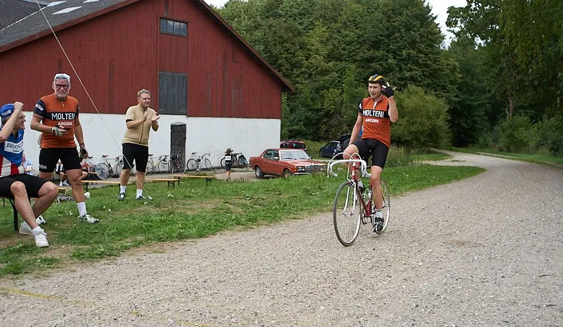

Fuld gas på samtlige pave’er

Tema: Sæsonstart 2019 – Mark Petersen.
Mark Petersen har kørt for Squadra Molteni i 2 sæsoner, hvor han har kørt sejre hjem i bla. Kroppedal Grandprix, cykelcross-løb og ikke mindst det danske retromasterskab i 2017. Mark tager snart hul på sin tredje sæson i moltenitrøjen – og nu også på orange stål.
Det alt overskyggende sæsonmål for 2019 gælder deltagelsen i Paris-Roubaix Sportive. Ud over en hyggelig tur med teamet, kunne det være fedt at køre et godt løb, fortæller Mark Petersen.
Et “perfekt” løb for mig vil sige et løb uden styrt, ingen defekter og tilstrækkelig med power i benene til at køre fuld gas på samtlige pave’er.
Mark har kørt licensløb en del år. Men i 2019 har Mark valgt licensløbene fra, og vil udelukkende fokusere på udvalgte løb, hvor Squadra Molteni stiller med et hold.
Jeg håber, at finde tid til at deltage i en håndfuld løb henover sæsonen, og her er målsætningen altid den samme: at give den fuld gas – og samtidigt med at have det sjovt undervejs, lyder det fra Mark.
Mark står foran 2019-sæsonen med to “nye” cykler: Til venstre: Grandis Superleggera i Colombus rør, Super Record 1.gen. Speciel letvægts-løbscykel. Og til højre en Molteni replica, bygget på Schweizisk Cilo ramme i Reynolds 531 special lightweight rør, med Nuovo Record. “Hævneren” til alt fra træning til løb.

I Molteni HQ er tilfredsheden med Mark Petersen stor – og forventningerne er tårnhøje.
Mark er et stort aktiv for holdet. Han er jo bom-stræk og et lysende talent, lyder det fra Niels Bjørnsteen i Molteni HQ.
Jeg tror at Mark kan køre sig frem til en sejr i stålklassen i Paris-Roubaix – og mon ikke også han kører sig 4. sejr hjem i Kroppedal Grandprix.


Foto: Martin Paldan (øverst), Mark Petersen og Peter Bjerg Fotografi